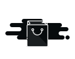

<!doctype html>
<!-- @dsCard group="UI Kit — Aya Platform" name="WhatsAYA · Rodrigo" subtitle="Painel Therapify reescrito — operação, conversas, pipeline, reativação e configurações" viewport="1440x900" -->
<html>
<head>
  <meta charset="utf-8">
  <title>WhatsAYA · Rodrigo</title>
  <link rel="stylesheet" href="https://cdn.jsdelivr.net/npm/@flaticon/flaticon-uicons@3.3.1/css/regular/rounded.css">
  <link rel="stylesheet" href="../../colors_and_type.css">
  <style>
    html, body, #root { margin: 0; height: 100%; }
    body { background: var(--muted-solid); color: #070B0D; font-family: 'Open Sans', ui-sans-serif, sans-serif; font-size: 14.4px; }
    * { box-sizing: border-box; }
    @keyframes spin { to { transform: rotate(360deg); } }
    ::-webkit-scrollbar { width: 8px; height: 8px; }
    ::-webkit-scrollbar-thumb { background: var(--border-solid); border-radius: 999px; }
    button, select, input { font-family: inherit; }
    button:focus-visible, select:focus-visible, input:focus-visible, [tabindex]:focus-visible {
      outline: 2px solid var(--ring); outline-offset: 2px;
    }
    .aya-empty-illustration { height: 120px; }
    @media (max-width: 980px) {
      .aya-global-search, .aya-rail { display: none !important; }
      .aya-content-inner { padding: 24px !important; }
    }
    @media (max-width: 760px) {
      html, body, #root { min-height: 100%; height: auto; }
      .aya-app { min-height: 100vh; height: auto !important; }
      .aya-navbar { padding: 4px 12px !important; position: sticky !important; top: 0; }
      .aya-navbar-start section { display: none !important; }
      .aya-body { flex-direction: column; }
      .aya-sidebar { width: 100% !important; border-right: 0 !important; border-bottom: 1px solid var(--border-solid); }
      .aya-sidebar-list { height: auto !important; flex-direction: row !important; overflow-x: auto !important; }
      .aya-sidebar-list > div:first-child { display: none !important; }
      .aya-sidebar-list [role="option"] { min-width: max-content; width: auto !important; border-left: 0 !important; border-bottom: 3px solid transparent; }
      .aya-content { overflow: visible !important; }
      .aya-content-inner { padding: 20px 14px 32px !important; }
      .wa-page-header { align-items: flex-start !important; flex-direction: column; }
      .wa-metrics { grid-template-columns: repeat(2, minmax(0, 1fr)) !important; }
      .wa-two-columns, .wa-chat-layout, .wa-settings-grid { grid-template-columns: 1fr !important; }
      .wa-chat-list { max-height: 280px; }
      .wa-pipeline { grid-template-columns: repeat(4, 260px) !important; overflow-x: auto; }
      .wa-form-row { grid-template-columns: 1fr !important; }
    }
    @media (max-width: 460px) {
      .wa-metrics { grid-template-columns: 1fr !important; }
      .wa-hide-mobile { display: none !important; }
    }
  </style>
</head>
<body>
  <div id="root"></div>

  <script src="https://unpkg.com/react@18.3.1/umd/react.development.js" integrity="sha384-hD6/rw4ppMLGNu3tX5cjIb+uRZ7UkRJ6BPkLpg4hAu/6onKUg4lLsHAs9EBPT82L" crossorigin="anonymous"></script>
  <script src="https://unpkg.com/react-dom@18.3.1/umd/react-dom.development.js" integrity="sha384-u6aeetuaXnQ38mYT8rp6sbXaQe3NL9t+IBXmnYxwkUI2Hw4bsp2Wvmx4yRQF1uAm" crossorigin="anonymous"></script>
  <script src="https://unpkg.com/@babel/standalone@7.29.0/babel.min.js" integrity="sha384-m08KidiNqLdpJqLq95G/LEi8Qvjl/xUYll3QILypMoQ65QorJ9Lvtp2RXYGBFj1y" crossorigin="anonymous"></script>

  <script type="text/babel" src="Atoms.jsx"></script>
  <script type="text/babel" src="DataTable.jsx"></script>
  <script type="text/babel" src="Shell.jsx"></script>
  <script type="text/babel" src="Dashboard.jsx"></script>
  <script type="text/babel" src="Screens.jsx"></script>
  <script type="text/babel" src="WhatsAya.jsx"></script>

  <script type="text/babel" data-presets="react">
    const { useState: useAppState } = React;

    const SIDEBAR_ITEMS = [
      { key: 'overview', icon: 'apps', label: 'Visão geral' },
      { key: 'conversations', icon: 'comment-alt', label: 'Conversas', tag: '2' },
      { key: 'pipeline', icon: 'chart-tree-map', label: 'Pipeline', tag: '9' },
      { key: 'agenda', icon: 'calendar', label: 'Agenda', tag: '4' },
      { key: 'reactivation', icon: 'rotate-right', label: 'Reativação', tag: '3' },
      { key: 'operations', icon: 'settings', label: 'Configurações' },
      { key: 'login', icon: 'lock', label: 'Tela de Login' },
    ];

    const BREADCRUMBS = {
      overview: ['WhatsAYA', 'Visão geral'],
      conversations: ['WhatsAYA', 'Conversas'],
      pipeline: ['WhatsAYA', 'Pipeline'],
      agenda: ['WhatsAYA', 'Agenda & Horários'],
      reactivation: ['WhatsAYA', 'Reativação'],
      operations: ['WhatsAYA', 'Configurações'],
      login: ['WhatsAYA', 'Segurança', 'Login'],
    };

    function App() {
      const [active, setActive] = useAppState(() => {
        const stored = localStorage.getItem('aya.active');
        return SIDEBAR_ITEMS.some((item) => item.key === stored) ? stored : 'overview';
      });
      const [botPaused, setBotPaused] = useAppState(false);
      const navigate = (k) => { setActive(k); localStorage.setItem('aya.active', k); };

      return (
        <div className="aya-app" style={{ display: 'flex', flexDirection: 'column', height: '100vh', background: 'var(--muted-solid)' }}>
          <Navbar breadcrumbs={BREADCRUMBS[active] || ['Home']} />
          <div className="aya-body" style={{ flex: 1, display: 'flex', minHeight: 0 }}>
            <SecondarySidebar title="Operação" items={SIDEBAR_ITEMS} active={active} onNavigate={navigate} />
            <main className="aya-content" data-screen-label={active}
              style={{ flex: 1, overflow: 'auto', display: 'flex', justifyContent: 'center' }}>
              <div className="aya-content-inner" style={{ width: '100%', maxWidth: 1440, padding: '32px 48px 40px 36px', position: 'relative' }}>
                {active === 'overview' && <WhatsAyaOverview onNavigate={navigate} botPaused={botPaused} onToggleBot={() => setBotPaused(!botPaused)} />}
                {active === 'conversations' && <WhatsAyaConversations />}
                {active === 'pipeline' && <WhatsAyaPipeline onOpenConversation={() => navigate('conversations')} />}
                {active === 'agenda' && <WhatsAyaAgenda />}
                {active === 'reactivation' && <WhatsAyaReactivation />}
                {active === 'operations' && <WhatsAyaOperations botPaused={botPaused} onToggleBot={() => setBotPaused(!botPaused)} />}
                {active === 'login' && <WhatsAyaLogin />}
                {!['overview','conversations','pipeline','agenda','reactivation','operations','login'].includes(active) && (
                  <div style={{
                    display: 'flex', flexDirection: 'column', alignItems: 'center',
                    justifyContent: 'center', minHeight: 400, gap: 16, padding: 40,
                  }}>
                    
                    <div style={{ fontSize: 22, fontWeight: 600 }}>Tela indisponível</div>
                    <div style={{ fontSize: 13, color: 'var(--muted-foreground)' }}>
                      Volte para a visão geral do WhatsAYA.
                    </div>
                    <Button variant="outline" icon="arrow-left" onClick={() => navigate('overview')}>Voltar</Button>
                  </div>
                )}
              </div>
            </main>
          </div>
        </div>
      );
    }

    ReactDOM.createRoot(document.getElementById('root')).render(<App />);
  </script>
</body>
</html>
